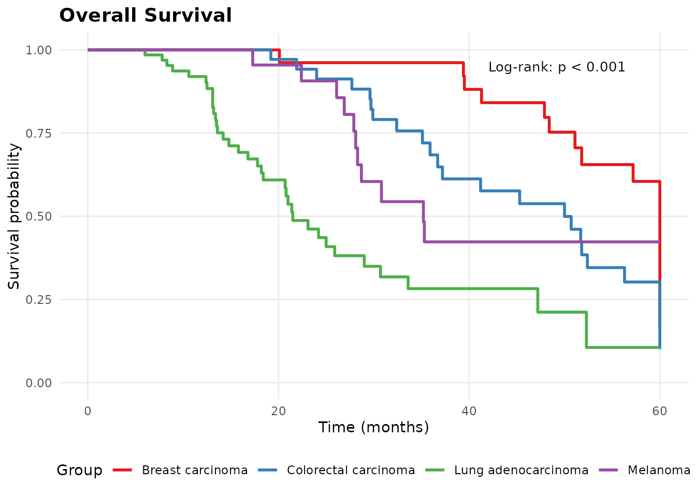
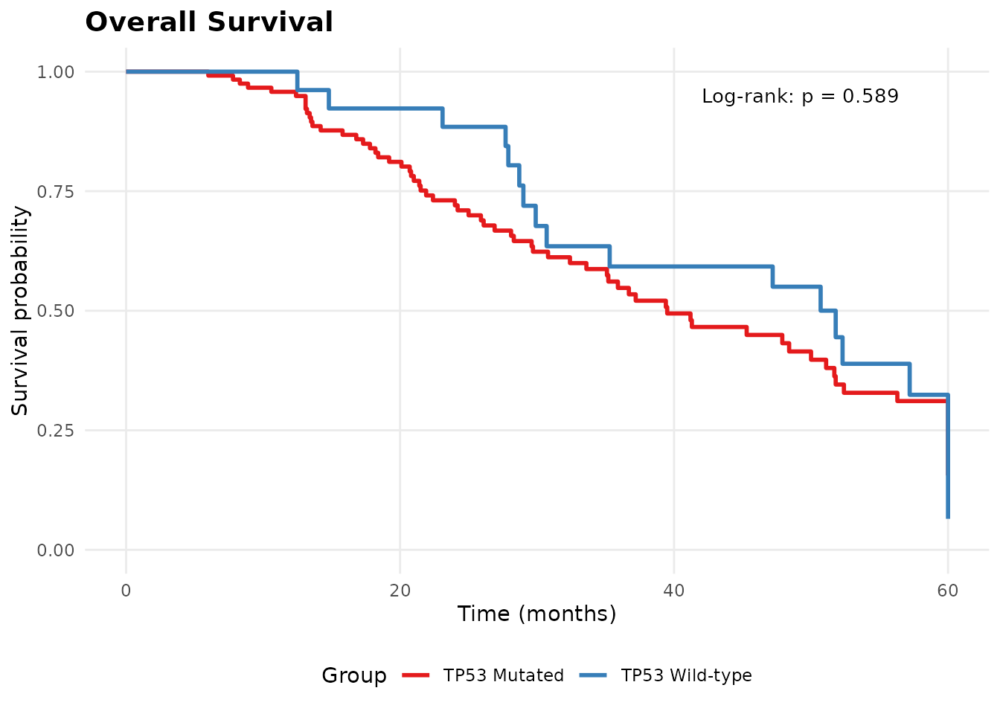
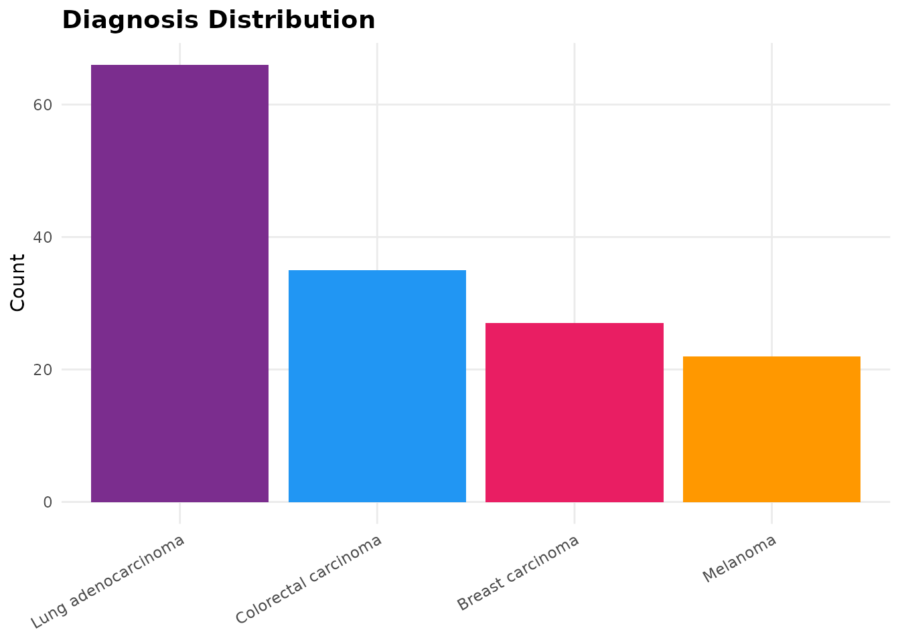
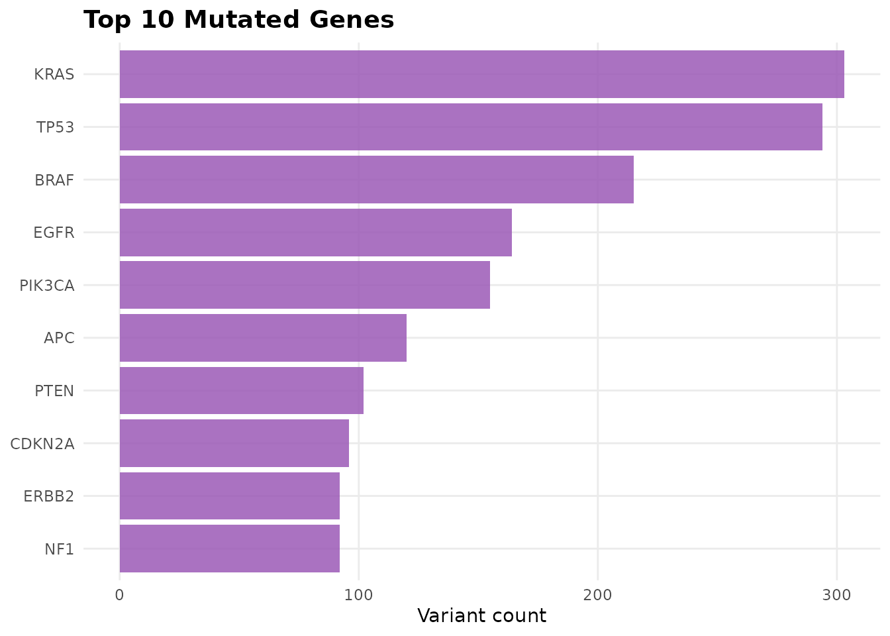
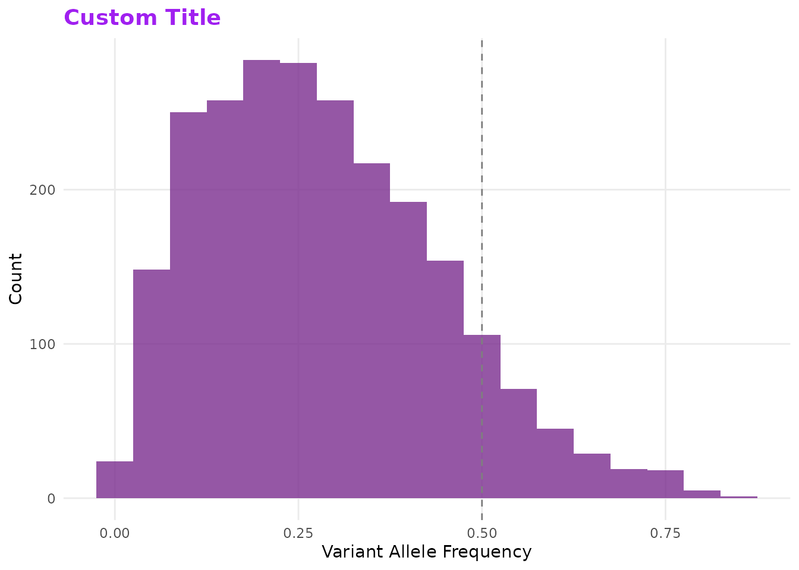

Overview
All molpathR plot functions return ggplot2 objects, so you can customize them with standard ggplot2 syntax.
library(molpathR)
db <- mp_example_db(n_patients = 150, seed = 42)Survival analysis
# Overall survival by diagnosis
mp_plot_survival(db, group_by = "diagnosis", type = "os")
# Stratify by TP53 mutation status
mp_plot_survival(db, group_by = "TP53", type = "os")
Cohort overview
plots <- mp_plot_cohort_overview(db)
plots$diagnosis
plots$top_genes
Customization
All plots can be customized with ggplot2:
library(ggplot2)
mp_plot_vaf_distribution(db) +
labs(title = "Custom Title") +
theme(plot.title = element_text(colour = "purple"))